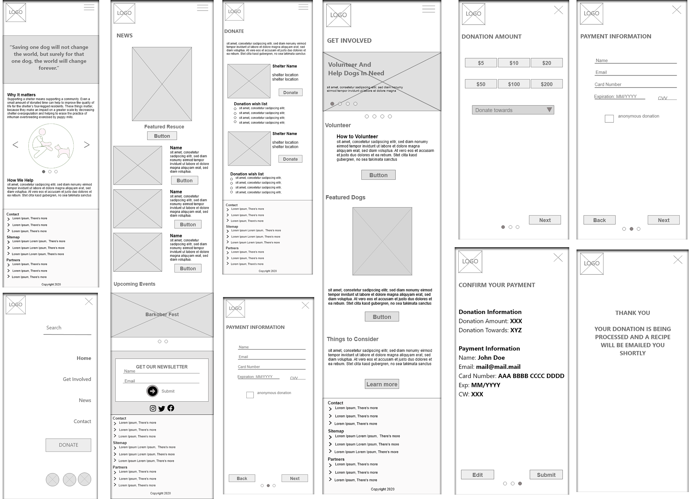
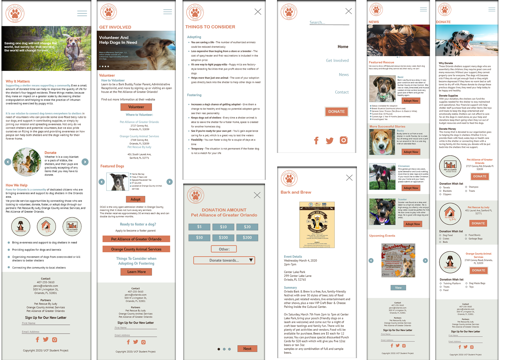

Goal
Bringing awareness and support to dog shelters in the Orlando area. By providing service opportunities through connecting those who are looking to volunteer, donate, foster, or adopt dogs through our partners: Pet Rescue By Judy, Orange County Animal Services, and Pet Alliance of Greater Orlando.
My Roles
- UX Designer
- Front-End Developer
- Researcher
Research
Paws for orlando wireframes and palette were inspired by ASPCA (American Society for the Prevention of Cruelty to Animals), Pet Rescue by Judy, and Pet Alliance of Greater Orlando.the websites. The market gap allowed us to create an easy to use website that focuses on helping the dogs in need. We noticed that the comparable websites can be overwhleming when presented with too much infomation, so we created content that offers quick information.
Promotion Plan
Promotional plan include leveraging social media to expand our presence beyond our physical presence and to catch the attention of those who follow dogs, dog shelters, or activist social media accounts as well as Partnering up with local breweries to him dogs find their furever homes. Ideas include featuring dogs on beer cans and hosting adoption events where people can meet dogs outside of shelters.
Design
Although most Animal rescue brands use warm colors like orange and red, our color palette was chosen to portray a stable and pleasing mood with these orange and blue complementary colors across our media and content. These colors together create harmony according to color theory and they complement our message to join dogs into stable families and to make our content more pleasing to the eye because they are complementary colors, and to please our audience of dog lovers and rescue enthusiasts.
Low-Fidelity
Our team wanted Paws for Orlando to be mobile friendly and my role was to make the site responsive. Every element was selected to make the site easier to use on mobile and tablet, thus keeping more visitors on our site longer.
Hi-Fidelity
The project did not require development of the site, so I created a Hi-fidelity prototype on Adobe XD. A few members of the team along with myself created a mock website using a template from HTML5 UP.
Unimplemented Updates
- Updating Social Media Accounts Our social media accounts will consist of accurate up to date information. Updates will include images, captions and tweets on new information.
- News Page During our design phase we originally planned to have a news page. We chose to include any updated news on the homepage instead so users can see recent dogs up for adoption.
- Events Our team found numerous event flyers we wanted on the website. We were debating on creating an Events tab or placing it on the News page. We decided to include events in the footer where it’s visible on each page.